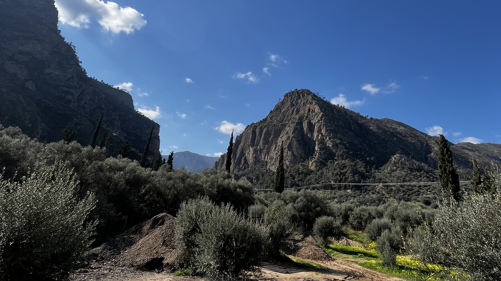

20 km
Συνολικό μήκος φαραγγιού Total gorge length
CHELMOS - VOURAIKOS UNESCO GLOBAL GEOPARKCHELMOS - VOURAIKOS UNESCO GLOBAL GEOPARK
Εκεί όπου ο χρόνος κυλά μέσα στην πέτραWhere Time Flows through Stone
Στον Βουραϊκό, το νερό χαράζει αργά τη διαδρομή του πάνω σε ασβεστολιθικά τοιχώματα, δημιουργώντας ένα ζωντανό αρχείο γεωλογικού χρόνου. In Vouraikos, water slowly carves its route across limestone walls, creating a living archive of geological time.
Συνολικό μήκος φαραγγιού Total gorge length
Ιστορική σύνδεση με Οδοντωτό Historic railway connection
Ευρωπαϊκό μονοπάτι πεζοπορίας European hiking trail


Το Φαράγγι The Gorge
Ανακαλύψτε το φαράγγι του Βουραϊκού! Ταξιδέψτε με τον Οδοντωτό ανάμεσα σε σήραγγες με σταλαγμίτες ή πεζοπορήστε στο ευρωπαϊκό μονοπάτι Ε4. Discover Vouraikos Gorge. Ride the Odontotos through stalactite-lined tunnels, or hike along the European E4 trail.
Ο ποταμός που διατρέχει το φαράγγι πήρε το όνομά του από την αρχαία πόλη. Όπως σημειώνει ο ιστορικός Γ. Παπανδρέου, το τμήμα του υδάτινου ρεύματος που διέσχιζε την επικράτεια της αρχαίας πόλεως Βούρας μέχρι τις ακτές της Αιγιάλειας, ονομάστηκε Βουραϊκός. Το επιβλητικό ρήγμα των 20 χιλιομέτρων συνθέτει ένα σπάνιο γεωλογικό τοπίο, όπου ο ιστορικός Οδοντωτός σιδηρόδρομος του 1896 σκαρφαλώνει διασχίζοντας 49 γέφυρες και περνώντας μέσα από σκοτεινές σήραγγες με φυσικούς σταλαγμίτες ανάμεσα στους σταθμούς Νιάματα και Τρικλιά. Για να βιώσετε την απόλυτη ορεινή εξόρμηση, επιβιβαστείτε στα βαγόνια της αμαξοστοιχίας για να θαυμάσετε αναβάσεις με κλίσεις που αγγίζουν το 17,5% ή πεζοπορήστε στο ευρωπαϊκό μονοπάτι Ε4 που κινείται παράλληλα με τις ράγες δίπλα στο ορμητικό ποτάμι. The river that crosses the gorge took its name from the ancient city. As historian G. Papandreou notes, the stretch of water that flowed through the territory of ancient Voura to the coast of Aigialeia came to be known as Vouraikos. This dramatic 20-kilometer rift forms a rare geological landscape, where the historic Odontotos railway (1896) climbs over 49 bridges and passes through dark tunnels with natural stalactites between Niamata and Triklia. For the ultimate mountain outing, board the train to witness gradients reaching 17.5%, or follow the European E4 trail running parallel to the tracks beside the rushing river.
Όσοι επιλέγουν την άμεση επαφή με το περιβάλλον ακολουθούν το Ευρωπαϊκό μονοπάτι Ε4, το οποίο αναπτύσσεται παράλληλα με τις σιδηροδρομικές ράγες. Η πεζοπορία επιτρέπει την παρατήρηση της προστατευόμενης ενδημικής χλωρίδας του Εθνικού Πάρκου. Στα τοιχώματα του βουνού ευδοκιμούν είδη με ιδιαίτερη επιστημονική αξία, όπως η καμπανούλα των βράχων (Campanula rupestris), ο άγριος στάχυς (Stachys parolinii) και η αουρίνια του Μωριά (Aurinia moreana). Κάθε χρόνο, τη δεύτερη Κυριακή του Μαΐου, εκατοντάδες ορειβάτες συγκεντρώνονται για να πραγματοποιήσουν το οργανωμένο «Πανελλήνιο Πέρασμα» του φαραγγιού, υπό την αιγίδα του Συλλόγου Ορειβασίας και Χιονοδρομίας Καλαβρύτων. Those seeking direct contact with nature can follow the European E4 trail, which runs parallel to the railway line. Hiking here offers close observation of the protected endemic flora of the National Park. On the mountain walls, species of high scientific value thrive, including the rock bellflower (Campanula rupestris), wild hedge-nettle (Stachys parolinii), and Morea alyssum (Aurinia moreana). Every year, on the second Sunday of May, hundreds of hikers gather for the organized "Panhellenic Crossing" of the gorge under the auspices of the Kalavryta Mountaineering and Ski Club.
Η τραχιά μορφολογία του εδάφους εξυπηρετεί απόλυτα τις απαιτήσεις των αθλημάτων περιπέτειας. Το ορμητικό ποτάμι και οι κάθετες ορθοπλαγιές δημιουργούν το κατάλληλο πεδίο για όσους επιθυμούν να δοκιμάσουν την κατάβαση του Βουραϊκού, την αναρρίχηση στα βράχια και την απαιτητική ορειβασία στην ευρύτερη περιοχή του Χελμού. The rugged terrain is ideal for adventure sports. The rushing river and sheer cliff faces create the perfect setting for river descent in Vouraikos, rock climbing, and demanding mountaineering in the wider Chelmos area.
Στο 12ο χιλιόμετρο της σιδηροδρομικής και πεζοπορικής πορείας, ο επισκέπτης φτάνει στο χωριό της Κάτω Ζαχλωρούς, το οποίο λειτουργεί ως σημείο εκκίνησης για την προσέγγιση της ιστορικής Μονής του Μεγάλου Σπηλαίου. Παράλληλα, οι πεζοπόροι μπορούν να αναζητήσουν το σπήλαιο στις όχθες του ποταμού, όπου, σύμφωνα με τον αρχαίο μύθο, λειτουργούσε το μαντείο του Ηρακλή. Εκεί, οι προσκυνητές της αρχαιότητας διάβαζαν τους χρησμούς πάνω στους λεγόμενους Πίνακες της Γνώσης. At kilometer 12 of the rail and hiking route, visitors reach the village of Kato Zachlorou, the starting point for approaching the historic Monastery of Mega Spilaio. Hikers can also look for the cave on the riverbanks where, according to ancient myth, an oracle dedicated to Heracles once operated. There, pilgrims of antiquity are said to have read prophecies on the so-called Tablets of Knowledge.
Το όνομα της αρχαίας πόλης συνδέεται άμεσα με την ελληνική μυθολογία. Η περιοχή οφείλει την ονομασία της στη Βούρα, την κόρη της Ελίκης και του Ίωνα. Ο αρχαίος μύθος αφηγείται πως ο Ηρακλής αγάπησε με πάθος τη νεαρή γυναίκα. Προκειμένου να διασχίσει το βουνό, να φτάσει στη θάλασσα και να τη συναντήσει, ο μυθικός ήρωας άνοιξε το επιβλητικό φαράγγι της περιοχής. The name of the ancient city is closely linked to Greek mythology. The region takes its name from Voura, daughter of Helike and Ion. Myth recounts that Heracles fell deeply in love with the young woman. To cross the mountain, reach the sea, and meet her, the legendary hero carved open the imposing gorge of the region.


Ο Οδοντωτός The Rack Railway
Η ιστορική γραμμή Διακοπτού - Καλαβρύτων, γνωστή ως Οδοντωτός, διασχίζει το φαράγγι με αργό, θεατρικό ρυθμό και αποκαλύπτει ένα από τα πιο εμβληματικά σιδηροδρομικά τοπία της Ευρώπης. The historic Diakofto - Kalavryta line, known as the Odontotos, crosses the gorge with a slow, theatrical rhythm and reveals one of Europe's most iconic railway landscapes.
Κάθε στροφή αλλάζει την κλίμακα της εμπειρίας: από στενά περάσματα και βραχώδεις τοίχους μέχρι ανοίγματα φωτός που αφήνουν το τοπίο να αναπνεύσει. Every turn shifts the scale of the experience, from narrow passages and rock walls to sudden openings of light that let the landscape breathe.
Η πλέον εμβληματική εμπειρία περιλαμβάνει την επιβίβαση στα βαγόνια του ιστορικού Οδοντωτού. Η σιδηροδρομική διαδρομή καλύπτει 22 χιλιόμετρα, ενώνοντας τον παραθαλάσσιο οικισμό του Διακοπτού με την ιστορική πόλη των Καλαβρύτων. Κατά τη διάρκεια της μίας ώρας που διαρκεί το ταξίδι, ο συρμός διασχίζει 49 γέφυρες και περνά μέσα από σκοτεινές σήραγγες. Μεταξύ των σταθμών Νιάματα και Τρικλιά, οι επιβάτες παρατηρούν την αμαξοστοιχία να εισχωρεί σε συμπαγή βράχο διακοσμημένο με γεωλογικούς σταλαγμίτες. One of the signature experiences is boarding the carriages of the historic Odontotos. The railway covers 22 kilometers, linking the coastal settlement of Diakofto with the historic town of Kalavryta. During the one-hour journey, the train crosses 49 bridges and passes through dark tunnels. Between Niamata and Triklia, passengers watch the train enter solid rock lined with geological stalactites.
Έτος λειτουργίας Year inaugurated
Σιδηροδρομική πορεία Railway passage
Γέφυρες και περάσματα Bridges and crossings
«Στον Βουραϊκό, το τοπίο δεν περιγράφεται απλώς. Αποκαλύπτεται αργά, σαν σκηνή από ντοκιμαντέρ που φωτίζεται από το νερό και την πέτρα.» "In Vouraikos, the landscape is not simply described. It is revealed slowly, like a documentary scene lit by water and stone."
Γεωπάρκο UNESCO UNESCO Geopark
Το Γεωπάρκο Χελμού - Βουραϊκού ανήκει στο Δίκτυο Παγκόσμιων Γεωπάρκων της UNESCO, αναγνωρισμένο για τη μοναδική γεωμορφολογία, τη βιοποικιλότητα και τη σύνδεσή του με την τοπική μνήμη και παράδοση. The Chelmos - Vouraikos Geopark is part of the UNESCO Global Geoparks Network, recognized for its singular geomorphology, biodiversity, and its ties to local memory and tradition.
Η εμπειρία του επισκέπτη δεν είναι μόνο θέαση. Είναι ανάγνωση στρωμάτων χρόνου, φυσικών μεταβολών και ανθρώπινων ιστοριών που συνυπάρχουν στο ίδιο τοπίο. The visitor experience is not just visual. It is a reading of layered time, natural transformation, and human stories coexisting within the same landscape.
Τα νερά του Βουραϊκού πηγάζουν από τις δυτικές παρυφές του βουνού Χελμός (Αροάνια όρη) και τις ανατολικές πλαγιές του όρους Καλλιφώνι. Ο ποταμός διανύει μια συνολική πορεία 37,5 έως 40 χιλιομέτρων, προτού εκβάλει στον Κορινθιακό κόλπο, κοντά στον οικισμό του Διακοπτού. Το πιο εντυπωσιακό τμήμα της διαδρομής του είναι το Φαράγγι του Βουραϊκού, το οποίο εκτείνεται σε μήκος περίπου 20 χιλιομέτρων. Κατά τη διάρκεια χιλιετιών, η ορμή του νερού σμίλεψε το άγριο ανάγλυφο, δημιουργώντας ένα τοπίο με απόκρημνα βράχια, φυσικές σπηλιές και καταρράκτες. Από το 2009, το φαράγγι, μαζί με τον ευρύτερο ορεινό όγκο του Χελμού, προστατεύεται θεσμικά και αποτελεί το Εθνικό Πάρκο Χελμού-Βουραϊκού. The waters of Vouraikos rise on the western foothills of Mount Chelmos (Aroania range) and the eastern slopes of Mount Kallifoni. The river runs for about 37.5 to 40 kilometers before emptying into the Corinthian Gulf near Diakofto. Its most striking section is Vouraikos Gorge, which stretches for roughly 20 kilometers. Over millennia, the force of the water sculpted the rugged relief, creating a landscape of steep cliffs, natural caves, and waterfalls. Since 2009, the gorge and the wider Chelmos massif have been protected as the Chelmos-Vouraikos National Park.
Το οικοσύστημα που αναπτύσσεται μέσα και γύρω από το φαράγγι παρουσιάζει τεράστιο επιστημονικό ενδιαφέρον. Η χλωρίδα της περιοχής θεωρείται εξέχουσας σημασίας, καθώς φιλοξενεί σπάνια και προστατευόμενα ενδημικά είδη φυτών που φυτρώνουν στους βράχους. Οι επιστήμονες έχουν καταγράψει φυτά όπως η καμπανούλα των βράχων (Campanula rupestris), ο άγριος στάχυς (Stachys parolinii) και η αουρίνια του Μωριά (Aurinia moreana). Παράλληλα, η άγρια πανίδα της περιοχής βρίσκει ασφαλές καταφύγιο στην πυκνή βλάστηση και στους απότομους, δασωμένους ορεινούς όγκους που υψώνονται περιμετρικά του ποταμού, διατηρώντας την περιβαλλοντική ισορροπία του Εθνικού Πάρκου. The ecosystem in and around the gorge is of outstanding scientific interest. The region's flora is especially important, hosting rare and protected endemic plant species that grow on rocky surfaces. Scientists have recorded species such as the rock bellflower (Campanula rupestris), wild hedge-nettle (Stachys parolinii), and Morea alyssum (Aurinia moreana). At the same time, local wildlife finds safe refuge in dense vegetation and in the steep, forested mountain slopes surrounding the river, helping preserve the environmental balance of the National Park.
Η περιοχή διαθέτει σημαντικό ενδιαφέρον για εξερεύνηση σπηλαίων. Στις όχθες του Βουραϊκού εντοπίζεται το σπήλαιο όπου, σύμφωνα με τον μύθο, λειτουργούσε μαντείο αφιερωμένο στον Ηρακλή. Επιπλέον, το Σπήλαιο Λιμνών προσφέρει οργανωμένη ξενάγηση 40 λεπτών, αποκαλύπτοντας 13 διαδοχικές λίμνες, εντυπωσιακούς σχηματισμούς σταλακτίτων. The area is particularly appealing for cave exploration. On the banks of the Vouraikos lies the cave where, according to myth, an oracle dedicated to Heracles once operated. In addition, the Cave of the Lakes offers a 40-minute guided tour, revealing 13 successive lakes and impressive stalactite formations.

Σύμφωνα με την επίσημη σελίδα της UNESCO, το Chelmos-Vouraikos είναι ενταγμένο στο Παγκόσμιο Δίκτυο Γεωπάρκων της UNESCO. According to UNESCO's official page, Chelmos-Vouraikos is included in the UNESCO Global Geoparks Network.
Επίσημη Σελίδα UNESCOOfficial UNESCO Page
Ευρωπαϊκό μονοπάτι πεζοπορίαςEuropean hiking trail
Η κλασική πεζοπορική γραμμή που ακολουθεί τη χαράδρα και συνδέει το φυσικό ανάγλυφο με τον ιστορικό Οδοντωτό.The classic hiking line that follows the gorge and links the natural relief with the historic rack railway.

Από το Διακοπτό προς τα Καλάβρυτα, η πορεία των 22 χιλιομέτρων κινείται κόντρα στη ροή του Βουραϊκού, πάνω ή δίπλα στις ράγες του Οδοντωτού, με έντονες κλίσεις έως 17,5% και καθαρά ορειβατικό χαρακτήρα.From Diakopto to Kalavryta, this 22 km route goes against the Vouraikos flow, on or beside the rack railway tracks, with steep gradients up to 17.5% and a distinctly mountaineering profile.

Από Καλάβρυτα ή Κάτω Ζαχλωρού προς Διακοπτό, η κατάβαση ακολουθεί το Ε4 πάνω ή δίπλα στις ράγες του Οδοντωτού, με διαρκώς εναλλασσόμενο τοπίο, γέφυρες, σήραγγες και απαιτητικό πετρώδες έδαφος.From Kalavryta or Kato Zachlorou to Diakopto, the descent follows the E4 on or beside the rack railway tracks, through constantly changing scenery with bridges, tunnels, and demanding rocky terrain.
Μια ήπια κατάβαση προς τους πιο φωτογραφημένους καταρράκτες του ποταμού. Ιδανική για φωτογραφία.A gentle descent to the most photographed waterfalls of the river. Perfect for photography.
Το φαράγγι του Βουραϊκού είναι ένα γεωλογικό ρήγμα σχεδόν 20 χιλιομέτρων στη βόρεια Πελοπόννησο και προσφέρει μία από τις πιο αυθεντικές πεζοπορικές εμπειρίες στην Ελλάδα. Το Ευρωπαϊκό Μονοπάτι Ε4 διασχίζει την προστατευόμενη περιοχή του Εθνικού Πάρκου και Παγκόσμιου Γεωπάρκου UNESCO Χελμού-Βουραϊκού, ακολουθώντας παράλληλη πορεία με τις ράγες του ιστορικού Οδοντωτού. Vouraikos Gorge is a nearly 20 km geological rift in northern Peloponnese and one of Greece's most authentic hiking destinations. The European E4 trail crosses the protected Chelmos-Vouraikos National Park and UNESCO Global Geopark, running parallel to the historic rack railway.
Η συνύπαρξη του τρένου με την άγρια φύση μετατρέπει τη διαδρομή σε ζωντανό ταξίδι στον χρόνο και στην τοπική ιστορία. Η πλήρης διαδρομή του Ε4 από τα Καλάβρυτα έως το Διακοπτό καλύπτει συνολικά 22 χιλιόμετρα. This blend of rail heritage and wild nature creates a unique journey through landscape and local history. The full E4 route from Kalavryta to Diakopto covers 22 kilometers.
Εάν η εκκίνηση γίνει από την Κάτω Ζαχλωρού, η απόσταση μειώνεται περίπου στα 13 με 15 χιλιόμετρα. Παράλληλα, υπάρχει και συντομότερη εναλλακτική 10 χιλιομέτρων, με αφετηρία τη Ζαχλωρού και τερματισμό στη στάση Νιάματα. If you start from Kato Zachlorou, the distance drops to about 13 to 15 km. A shorter 10 km option is also available, from Zachlorou to the Niamata stop.
Πλήρης διάσχιση (Καλάβρυτα - Διακοπτό): 22 χλμ., περίπου 5 - 6 ώρες, δυσκολία χαμηλή προς μέτρια. Η κλίση είναι κυρίως κατηφορική, αλλά χρειάζεται διαρκής προσοχή στο ανώμαλο πετρώδες έδαφος, στο χαλίκι και στην κίνηση επάνω στις ράγες. Δεν απαιτείται προηγούμενη ορειβατική εμπειρία, αλλά απαιτείται βασική φυσική κατάσταση. Full crossing (Kalavryta - Diakopto): 22 km, around 5 - 6 hours, low-to-moderate difficulty. Mostly downhill, but the rocky and uneven rail-side terrain demands steady attention and basic fitness.
Εναλλακτικές αφετηρίες: Από Κάτω Ζαχλωρού προς Διακοπτό (10 - 15 χλμ., περίπου 3 ώρες) ή από Ζαχλωρού προς Νιάματα (10 χλμ., περίπου 2 ώρες) για πιο σύντομη εμπειρία. Alternative options: Start from Kato Zachlorou to Diakopto (10 - 15 km, about 3 hours) or Zachlorou to Niamata (10 km, about 2 hours) for a shorter outing.
Η πορεία πλαισιώνεται από 49 πέτρινες και μεταλλικές γέφυρες και λαξευμένες σήραγγες του τέλους του 19ου αιώνα. Ανάμεσα σε Νιάματα και Τρικλιά συναντάτε εντυπωσιακά περάσματα σε συμπαγή βράχο με φυσικούς σταλαγμίτες και σταλακτίτες, ενώ από τη Ζαχλωρού μπορείτε να κάνετε παράκαμψη προς τη Μονή Μεγάλου Σπηλαίου. The route includes 49 stone and metal bridges and carved tunnels from the late 19th century. Between Niamata and Triklia, hikers pass through dramatic rock sections with natural stalactites, while Zachlorou offers a detour to the historic Mega Spilaio Monastery.
Στις όχθες του ποταμού, η παράδοση αναφέρει το μαντείο του Ηρακλή και τους «Πίνακες της Γνώσης». Παράλληλα, το οικοσύστημα φιλοξενεί σπάνια χλωρίδα όπως την καμπανούλα των βράχων (Campanula rupestris), αλλά και πλούσια πανίδα, από πέστροφες έως την απειλούμενη βίδρα. Local tradition also refers to an ancient cave oracle of Heracles. The gorge hosts rare flora such as Campanula rupestris and diverse fauna ranging from trout to the threatened otter.
Αποφύγετε τα τζιν και προτιμήστε ελαφριά ρούχα πεζοπορίας που στεγνώνουν γρήγορα. Φορέστε ορειβατικά παπούτσια ή μποτάκια που δένουν και στηρίζουν τον αστράγαλο για ασφάλεια στις πέτρες και στα χαλίκια. Avoid jeans and choose light, quick-drying hiking clothing. Wear proper hiking shoes or ankle-support boots for stability on rocky and gravel terrain.
Η πορεία από Διακοπτό προς Καλάβρυτα (22 χλμ.) είναι σαφώς πιο απαιτητική από την κατάβαση, καθώς γίνεται αντίθετα στη ροή του ποταμού και με συνεχή ανηφορική κλίση. Οι κλίσεις φτάνουν έως 17,5%, γεγονός που κάνει την ανάβαση καθαρά ορειβατική δοκιμασία και όχι απλό περίπατο. The ascent from Diakopto to Kalavryta (22 km) is significantly harder than the downhill route. Continuous uphill gradients, reaching up to 17.5%, make this a true mountaineering effort rather than a casual walk.
Συνιστάται μόνο σε πεζοπόρους με πολύ καλή φυσική κατάσταση. Άτομα με προβλήματα υγείας ή χαμηλή αντοχή καλό είναι να αποφύγουν την πλήρη ανηφορική διάσχιση. It is recommended only for hikers with strong endurance. People with health limitations should avoid the full uphill crossing.
Η κατάβαση ξεκινά από τον σταθμό των Καλαβρύτων ή το γραφικό χωριό της Κάτω Ζαχλωρούς, ακολουθώντας τα χνάρια του Ευρωπαϊκού μονοπατιού Ε4. Καθώς περπατάτε, το τοπίο αλλάζει γρήγορα μορφή. Ο περιπατητής κινείται διαρκώς πάνω ή ακριβώς δίπλα στις στενές ράγες των 750 χιλιοστών του Οδοντωτού σιδηροδρόμου. Το έδαφος παραμένει ανώμαλο, γεμάτο πέτρες και σκληρό χαλίκι, απαιτώντας σταθερό βήμα με ανθεκτικά ορειβατικά παπούτσια. The descent begins at Kalavryta station or from the scenic village of Kato Zachlorou, following the route of the European E4 trail. As you walk, the landscape changes quickly. Hikers move constantly on or just beside the narrow 750 mm rails of the Odontotos railway. The ground remains uneven, full of stones and hard gravel, requiring stable footing and durable hiking shoes.
Πάνω από 49 Γέφυρες
Ο ορμητικός ποταμός Βουραϊκός οδηγεί την πορεία σας. Κατά τη διάρκεια των 5 έως 6 ωρών που διαρκεί η πλήρης διάσχιση των 22 χιλιομέτρων μέχρι το Διακοπτό, περνάτε πάνω από 49 πέτρινες και μεταλλικές γέφυρες. Το βουητό του νερού ενώνεται συχνά με τον χαρακτηριστικό θόρυβο του τρένου. Όταν ο συρμός πλησιάζει με χαμηλή ταχύτητα, οι πεζοπόροι παραμερίζουν στα ειδικά πλατώματα ή στην άκρη της γραμμής, ανταλλάσσοντας χαιρετισμούς με τους επιβάτες.
Across 49 Bridges
The rushing Vouraikos river guides your route. During the 5 to 6 hours needed for the full 22 km crossing to Diakopto, you pass over 49 stone and metal bridges. The sound of water often blends with the characteristic noise of the train. When the train approaches at low speed, hikers step aside to designated platforms or the edge of the line, often exchanging greetings with passengers.
Μέσα στα Σπλάχνα του Βράχου
Τα πιο επιβλητικά τμήματα της διαδρομής αποκαλύπτονται καθώς προχωράτε προς τον σταθμό Νιάματα. Ειδικά στο τμήμα μεταξύ Τρικλιάς και Νιαμάτων, το μονοπάτι εισχωρεί κυριολεκτικά στα σπλάχνα του βουνού. Περπατάτε μέσα σε σκοτεινές, λαξευμένες σήραγγες, όπου φυσικοί σταλαγμίτες κρέμονται ακριβώς πάνω από τις σιδηροδρομικές γραμμές.
Inside the Mountain Rock
The most dramatic parts appear as you move toward Niamata station. Especially between Triklia and Niamata, the trail literally enters the heart of the mountain. You walk through dark, carved tunnels where natural stalactites hang just above the railway tracks.
Στα κάθετα τοιχώματα του φαραγγιού, ο προσεκτικός παρατηρητής εντοπίζει σπάνια ενδημικά είδη της Πελοποννήσου, όπως την προστατευόμενη καμπανούλα των βράχων (Campanula rupestris). Κάτω στα νερά, ανάμεσα στους βατράχους και τα νερόφιδα, ίσως διακρίνετε κάποια βίδρα ή πέστροφες να κολυμπούν στις σκιερές βάθρες του ποταμού. On the vertical gorge walls, careful observers can spot rare endemic species of the Peloponnese, including the protected rock bellflower (Campanula rupestris). In the waters below, among frogs and water snakes, you may also notice otters or trout swimming in the river's shaded pools.
Ο Τερματισμός στο Διακοπτό
Η συνεχής κατηφορική κλίση, η οποία φτάνει το 17,5% στα πιο απότομα σημεία, διευκολύνει την αναπνοή αλλά καταπονεί σταδιακά τα γόνατα. Για αυτόν τον λόγο, τα ορειβατικά μπατόν προσφέρουν σημαντική βοήθεια. Καθώς τα χιλιόμετρα λιγοστεύουν, η στενή βραχώδης χαράδρα ανοίγει. Η πυκνή ορεινή βλάστηση δίνει τη θέση της στον ανοιχτό ορίζοντα, μέχρι να εμφανιστούν τα πρώτα κτίρια του Διακοπτού και η δροσερή αύρα του Κορινθιακού κόλπου να σημάνει το τέλος της οδοιπορίας.
Finishing in Diakopto
The constant downhill gradient, reaching 17.5% at the steepest points, makes breathing easier but gradually strains the knees. For this reason, trekking poles provide meaningful support. As the kilometers pass, the narrow rocky ravine opens up. Dense mountain vegetation gives way to a wider horizon, until the first buildings of Diakopto appear and the cool breeze of the Corinthian Gulf marks the end of the hike.
Η πορεία ξεκινά από τον παραθαλάσσιο οικισμό του Διακοπτού, αφήνοντας πίσω τη δροσερή αύρα του Κορινθιακού κόλπου. Ακολουθώντας το Ευρωπαϊκό μονοπάτι Ε4 κόντρα στη ροή του ποταμού Βουραϊκού, ο πεζοπόρος ξεκινά μια καθαρά ορειβατική δοκιμασία. Σε αντίθεση με την πιο ξεκούραστη κατάβαση, η ανηφορική διάσχιση των 22 χιλιομέτρων μέχρι την πόλη των Καλαβρύτων αποτελεί μια σοβαρή σωματική πρόκληση που απαιτεί αντοχή και εξαιρετική φυσική κατάσταση. The route starts from the coastal settlement of Diakopto, leaving behind the cool breeze of the Corinthian Gulf. Following the European E4 trail against the flow of the Vouraikos river, hikers begin a true mountaineering challenge. Unlike the easier downhill crossing, the uphill 22 km approach to Kalavryta is a demanding physical effort that requires endurance and strong fitness.
Σκαρφαλώνοντας στις Ράγες του Οδοντωτού
Καθώς προχωράτε στο εσωτερικό της χαράδρας, το έδαφος παραμένει σκληρό, γεμάτο χαλίκι και πέτρες. Η διαδρομή κινείται διαρκώς πάνω ή δίπλα στις εξαιρετικά στενές ράγες των 750 χιλιοστών. Ο βαθμός δυσκολίας της ορειβασίας αυξάνεται ραγδαία καθώς η κλίση του βουνού μεγαλώνει, αγγίζοντας σε ορισμένα τμήματα το εντυπωσιακό 17,5%. Σε αυτά ακριβώς τα απότομα περάσματα κατανοεί κανείς βιωματικά γιατί ο ιστορικός συρμός του 1896 χρειάζεται να γαντζωθεί με τα ειδικά του γρανάζια στις οδοντωτές σιδηροτροχιές για να καταφέρει να ανεβεί.
Climbing Along the Rack Railway
As you move deeper into the gorge, the ground stays rough, with gravel and stones throughout. The route runs continuously on or beside the very narrow 750 mm tracks. Difficulty rises quickly as the slope increases, reaching up to 17.5% in some sections. In those steep passages, you can truly understand why the historic 1896 train must engage its rack gears to climb the mountain.
Σήραγγες με Σταλαγμίτες και Σπάνια Φύση
Η κούραση της συνεχούς ανηφόρας μετριάζεται από την εναλλασσόμενη γεωλογική ομορφιά του Εθνικού Πάρκου Χελμού-Βουραϊκού. Οδοιπορώντας ανάμεσα στους σταθμούς Νιάματα και Τρικλιά, εισέρχεστε κυριολεκτικά στα σπλάχνα του βουνού, περνώντας μέσα από σκοτεινές, λαξευμένες σήραγγες όπου φυσικοί σταλαγμίτες κρέμονται απειλητικά πάνω από τη γραμμή. Στα κάθετα βράχια γύρω σας επιβιώνουν σπάνια φυτά της Πελοποννήσου, όπως η προστατευόμενη καμπανούλα των βράχων (Campanula rupestris) και η αουρίνια του Μωριά (Aurinia moreana). Ο ήχος του ορμητικού νερού στους καταρράκτες καλύπτεται μόνο όταν ακουστεί το τρένο να πλησιάζει, αναγκάζοντάς σας να παραμερίσετε με προσοχή στην άκρη της γραμμής.
Tunnels, Stalactites, and Rare Nature
The strain of continuous ascent is balanced by the changing geological beauty of Chelmos-Vouraikos National Park. Between Niamata and Triklia, you literally enter the mountain through dark carved tunnels where natural stalactites hang above the line. On the steep surrounding cliffs, rare Peloponnesian flora survives, including Campanula rupestris and Aurinia moreana. The sound of rushing waterfalls is interrupted only when the train approaches, requiring hikers to step carefully aside.
Η Λύτρωση στα 735 Μέτρα
Στο 12ο χιλιόμετρο της πορείας σας, η στενωπός ανοίγει προσωρινά φτάνοντας στον σιδηροδρομικό σταθμό της Κάτω Ζαχλωρούς. Οι αντοχές δοκιμάζονται ξανά καθώς η ανάβαση συνεχίζεται νοτιοανατολικά προς τη στάση Κερπινής. Ύστερα από τουλάχιστον 5 έως 6 ώρες σκληρής προσπάθειας στο βουνό, η απότομη βραχώδης χαράδρα υποχωρεί οριστικά. Η είσοδος στα Καλάβρυτα, σε υψόμετρο 735 μέτρων στους πρόποδες των Αροανίων όρων, σηματοδοτεί τον τερματισμό, προσφέροντας την απόλυτη ικανοποίηση της κατάκτησης της δυσκολότερης κατεύθυνσης του μονοπατιού.
Relief at 735 Meters
Around the 12th kilometer, the narrow gorge briefly opens near Kato Zachlorou station. Endurance is tested again as the ascent continues southeast toward Kerpini. After at least 5 to 6 hours of hard effort, the steep rocky ravine finally recedes. Arriving in Kalavryta at 735 meters elevation, at the foothills of the Aroania mountains, marks the finish and the satisfaction of completing the trail's hardest direction.
Τι Αξίζει να Δείτε στο Μονοπάτι Ε4 What to See on the E4 Trail
Γεωλογικά Θαύματα και Μηχανικά Έργα του 19ου Αιώνα
Η διάσχιση του ευρωπαϊκού μονοπατιού Ε4 φέρνει τον πεζοπόρο σε άμεση επαφή με εντυπωσιακούς βραχώδεις σχηματισμούς, ορμητικούς καταρράκτες και επιβλητικές ορθοπλαγιές. Περπατώντας πλάι στις στενές ράγες των 750 χιλιοστών, διασχίζετε συνολικά 49 πέτρινες και μεταλλικές γέφυρες που στεφανώνουν το ποτάμι. Το πιο αξιοσημείωτο γεωλογικό σημείο της διαδρομής εντοπίζεται στο τμήμα μεταξύ των σταθμών Νιάματα και Τρικλιά. Εκεί, η σιδηροδρομική γραμμή εισέρχεται σε σκοτεινές, λαξευμένες σήραγγες, οι οποίες κοσμούνται από φυσικούς σταλαγμίτες και σταλακτίτες.
Geological Wonders and 19th-Century Engineering
Crossing the European E4 trail brings hikers into direct contact with dramatic rock formations, rushing waterfalls, and imposing cliff walls. Walking alongside the narrow 750 mm tracks, you cross 49 stone and metal bridges spanning the river corridor. The most remarkable geological point appears between Niamata and Triklia stations, where the railway enters dark carved tunnels decorated with natural stalagmites and stalactites.
Σπάνια Χλωρίδα και Άγρια Πανίδα του Εθνικού Πάρκου
Το Εθνικό Πάρκο Χελμού-Βουραϊκού φιλοξενεί είδη με εξαιρετική επιστημονική αξία. Στα κάθετα τοιχώματα του φαραγγιού φύονται ενδημικά φυτά, όπως η καμπανούλα των βράχων (Campanula rupestris), η αουρίνια του Μωριά (Aurinia moreana) και ο άγριος στάχυς (Stachys parolinii). Παρατηρώντας τα νερά του ποταμού, ίσως διακρίνετε πέστροφες, βατράχους, νερόφιδα ή ακόμα και την απειλούμενη βίδρα που αναζητά την τροφή της. Ψηλά στον ουρανό, η περιοχή αποτελεί καταφύγιο για εντυπωσιακά αρπακτικά πτηνά, όπως ο πετρίτης, το όρνιο, ο χρυσαετός και ο σπιζαετός.
Rare Flora and Wildlife of the National Park
Chelmos-Vouraikos National Park hosts species of exceptional scientific value. On the gorge walls, endemic plants thrive, including Campanula rupestris, Aurinia moreana, and Stachys parolinii. In the river, you may spot trout, frogs, water snakes, or even the threatened otter searching for food. Above the canyon, the area shelters remarkable raptors such as peregrine falcons, griffon vultures, golden eagles, and Bonelli's eagles.
Μυθολογικά Σπήλαια και Ιστορικά Μοναστήρια
Η τοπική παράδοση δίνει μια ξεχωριστή διάσταση στην ορεινή εξερεύνηση. Στις όχθες του ποταμού, η μυθολογία τοποθετεί ένα σπήλαιο που λειτουργούσε ως μαντείο αφιερωμένο στον Ηρακλή. Οι αρχαίοι προσκυνητές έριχναν εκεί αστραγάλους για να διαβάσουν τους χρησμούς στους «Πίνακες της Γνώσης». Προχωρώντας στο 12ο χιλιόμετρο της διαδρομής, ο σιδηροδρομικός σταθμός του χωριού Κάτω Ζαχλωρού προσφέρει άμεση πρόσβαση στην ιστορική Μονή του Μεγάλου Σπηλαίου, έναν από τους κορυφαίους θρησκευτικούς χώρους της Αχαΐας, όπου υψώθηκε το λάβαρο της Ελληνικής Επανάστασης.
Mythic Caves and Historic Monasteries
Local tradition adds a distinctive layer to mountain exploration. On the riverbanks, mythology places a cave that once served as an oracle dedicated to Heracles. Ancient pilgrims cast knucklebones there to read prophecies on the so-called "Tablets of Knowledge." Around kilometer 12, the Kato Zachlorou station offers direct access to the historic Monastery of Mega Spilaio, one of Achaia's most significant religious landmarks and a symbolic site of the Greek Revolution.
Διαδραστικός χάρτης της περιοχής του φαραγγιού με πραγματικά γεωγραφικά δεδομένα. Interactive map of the gorge area with real geographic data.
Η καλύτερη περίοδος επίσκεψης είναι από τον Μάιο έως τον Οκτώβριο. Το φθινόπωρο προσφέρει εντυπωσιακά χρώματα, ενώ την άνοιξη οι καταρράκτες είναι ορμητικοί λόγω του λιωμένου χιονιού.Best visited from May to October. Autumn brings stunning foliage while Spring features roaring waterfalls from snowmelt.
Τα δρομολόγια του τρένου αναχωρούν τακτικά από το Διακοπτό. Στην περίοδο αιχμής προτείνεται κράτηση εισιτηρίων τουλάχιστον 48 ώρες νωρίτερα.Trains depart regularly from Diakopto. We recommend booking tickets at least 48 hours in advance during peak season.
Αν κινείστε κοντά στις ράγες, ελέγχετε πάντα τα δρομολόγια του τρένου. Απαραίτητα είναι τα κατάλληλα ορειβατικά παπούτσια και τουλάχιστον 2 λίτρα νερό.Always check the train schedule if walking on the tracks. Proper hiking boots and at least 2L of water are mandatory.

ΣυντεταγμένεςCoordinates
38.2039° N, 22.1891° E



Οι φωτογράφοι και οι πηγές που αποτύπωσαν την ψυχή του Βουραϊκού. Photographers and sources that captured the soul of Vouraikos.